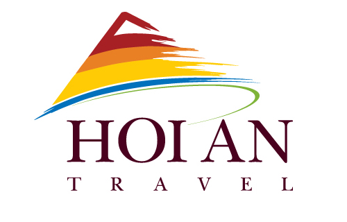

Ý kiến khách hàng
Nhà hàng
29/05/2014 08:38
Từ thị trấn Dương Đông, rời sân bay Phú Quốc bạn đi dọc bờ biển theo hướng nam (đường đi Dương Tơ) khoảng 5,5km thì đến Vườn Táo. Hoặc nếu bạn đến bằng đường thuỷ thì từ cảng An Thới bạn đi lên hướng Bắc, rẽ trái sang hướng đi Dương Tơ khoảng 25km (tính từ An Thới).

Hiện nay rất nhiều hãng lữ hành khắp nước đã đưa Vườn Táo vào chương trình tham quan Phú Quốc. Nhờ vị trí thuận tiện (bên bờ biển, gần thị trấn và không quá xa các điểm tham quan khắp đảo, nên Vườn Táo được chọn làm nơi dừng chân ăn uống cho du khách.
Ẩm thực là dịch vụ chính của Vườn Táo kể từ ngày chúng tôi được du khách đầu tiên ghé chân.
Cũng như mọi vùng biển khác, hải sản là nguyên liệu chính cho hầu hết các món ăn của dân xứ đảo. Tuy nhiên chúng tôi được thiên nhiên ban tặng những sản vật có hương vị riêng chỉ có tại đảo, ngay cả con cá cơm thông thường tại đây lại có một mùi hương riêng để tạo nên danh tiếng của nước mắm Phú Quốc.
Bên cạnh những món ăn có mặt khắp đảo, Vườn Táo giới thiệu một thực đơn mang hương vị chỉ có tại vườn, đây chính là sự lựa chọn của biết bao đoàn khách sau nhiều năm phục vụ mà chúng tôi được hân hạnh đón tiếp.
Địa chỉ: Ấp Cửa Lấp – Xã Dương Tơ – Phú Quốc – Kiên Giang
nguồn trích:http://www.dulichphuquoc.com/
29/05/2014 08:37
Quán Lê Giang được thiết kế theo kiểu giản dị nhưng thoáng mát. Quán có bán điểm ăn sáng với món hủ tiếu tôm mực, bánh canh ghẹ. Vào buổi trưa thì quán có phục vụ cơm với nhiều món hấp dẫn. Phong cách phục vụ khá tốt.
Địa chỉ:289 Trần Hưng Đạo, Dương Đông, Phú Quốc, Kiên Giang
nguồn trích:http://www.dulichphuquoc.com/
29/05/2014 08:36
Nhà hàng thiết kế rất đẹp, hài hòa, khi buổi trưa thật mát mẻ với nước suối nhân tạo và cây xanh tinh tế trong khi lại rất sang trọng với ánh đèn vàng nhạt hòa cùng màu sắc thân thiện của bàn ghế gỗ. Nhân viên phục vụ chuyên nghiệp, kể cả cách phục vụ rượu vang. Dụng cụ ăn vệ sinh. Có bể cá nhằm đáp ứng nhu cầu ăn cá tươi.
Thực đơn chủ đạo là các món hải sản với 2 lựa chọn :
+ Gọi theo dĩa với các món :gỏi hải sản, cơm hải sản…giá khá rẻ 35-45/dĩa.
+ Gọi theo phần hoặc con : cá mú, cá mập, cá bớp, tôm, cua ghẹ, …
Ngoài các resort ra thì có thể nói nhà hàng ZEN là nhất tại Dương Đông tính về độ sang trọng cũng như chất lượng phục vụ. Không dừng ở đó, hiện tại ông “chủ” nhà hàng ZEN đang mời nghệ nhân từ SG xuống để tạo hình thác nhân tạo quy mô lớn dựa theo vách núi tự nhiên phía sau cách bếp của nhà hànghiện tại là 30m, nghĩa là sẽ có một quy mô hơn, chiều sâu hơn khi ông “chủ” muốn rằng khách ngồi ăn sẽ nghe được tiếng nước chảy do suối “nửa nhân tạo” này, đây quả là một bức tranh sơn thủy thực sự của làng ẩm thực Phú Quốc
Địa chỉ: đường 30/4 thị trấn Dương Đông, Phú Quốc.
Nguồn trích:http://www.dulichphuquoc.com/
229/05/2014 08:35
Nhà hàng Xuân Thanh nằm ở sát bờ biển nên thực khách có thể vừa thưởng thức món ăn vừa ngắm cảnh biển. Nhà hàng chuyên phục vụ các món ăn đặc sản miền biển, nên món ăn ở đây rất đa dạng và phong phú. Các món ăn ngon của nhà hàng: ốc, cua, ghẹ, tôm, cá chình,… Nhà hàng còn phục vụ điểm tâm sáng.
Địa chỉ:20 Trần Hầu, P. Đông Hồ, TX. Hà Tiên, Tỉnh Kiên Giang.
Nguồn trích:http://www.dulichphuquoc.com/
29/05/2014 08:33
Nhà hàng Trùng Dương tọa lạc ngay trung tâm thị trấn Dương Đông, Phú Quốc. Nhà hàng có không gian thóang mát và không gian riêng biệt cho từng nhóm khách, phục vụ chuyên nghiệp với nhiều món ăn ngon. Thực khách đến đây sẻ cảm thấy thoải mái với sự phục vụ tận tình của nhân viên nhà hàng.
Địa chỉ: Khu phố 1 đường 30 tháng 4, TT Dương Đông, Huyện Phú Quốc, Tỉnh Kiên Giang
Nguồn trích:http://www.dulichphuquoc.com/
29/05/2014 08:31
Nhà hàng Anh Vũ có không gian rộng, có khu vực sân thượng thoáng mát. Chuyên phục vụ các món ăn đặc sản Phú Quốc rất đặc biệt bởi đội ngũ đầu bếp nhiều kinh nghiệm Nhà hàng còn có phục vụ điểm tâm sáng với thực đơn khá hấp dẫn như: hủ tiếu tôm mực, bánh canh hải sản… Không gian rộng rãi, món ăn ngon, đem lại cho bạn những phút giây thật sự thoải mái.
Địa chỉ: 77 Nguyễn Trung Trực, Khu phố 4, Dương Đông, Phú Quốc, Kiên Giang
Nguồn trích:http://www.dulichphuquoc.com/
Khách sạn
29/05/2014 09:00
Tọa lạc tại số 64 trên đường Trần Hưng Đạo, nằm sát cạnh bãi biển Dương Đông, trung tâm của đảo Phú Quốc. Khoảng 7 phút bằng taxi tính từ sân bay Phú Quốc, 40 phút từ bến tàu An Thới. Có các chuyến bay hàng ngày nối liền đảo với Tp.HCM và Rạch Giá. Phú Quốc cách Rạch Giá 120km đường biển.

– Khu nghỉ Sasco Blue Lagoon nằm trên diện tích 2 hectar với 100 mét bãi biển riêng trải dài. Đó là nơi khung cảnh thanh bình gặp gỡ với sự yên ả của bãi biển nhiệt đới, cát trắng và không khí trong lành
– Đến với một resort lý tưởng mang cái tên lãng mạn “Blue Lagoon” (Eo Biển Xanh), gợi nhắc về bộ phim của đạo diễn Randal cực kỳ nổi tiếng trong những năm 80. Lấy cảm hứng từ bộ phim này, resort chúng tôi sẽ mang đến cho quý khách những trải nghiệm tuyệt vời không thể nào quên. Đó là nơi khung cảnh thanh bình gặp gỡ với sự yên ả của bãi biển nhiệt đới, cát trắng và không khí trong lành.
– Đến với SASCO Blue Lagoon quý khách sẽ được cung cấp các dịch vụ tiêu chuẩn đẳng cấp quốc tế 4 sao, với những tác phẩm ẩm thực độc đáo và những tiện nghi sang trọng khác biệt giúp quý khách đắm chìm trong cảm giác “It’s relax time!” (Đây là lúc thư giãn!). Đối với một số người, đây sẽ là nơi để nghiêm nghưỡng những vẻ đẹp nguyên thủy của đảo ngọc Phú Quốc. Với một số khác, đây là một nơi dành cho sự thư giãn hòan tòan, lẩn tránh những vất vả đời thường. Nhưng tất cả đều sẽ thừa nhận, đây là một thiên đường trần gian không phải ai cũng có dịp tìm thấy!
– Hãy đến với SASCO Blue Lagoon để tìm những khỏanh khắc khó quên! Vị trí
Tọa lạc tại số 64 trên đường Trần Hưng Đạo, nằm sát cạnh bãi biển Dương Đông, trung tâm của đảo Phú Quốc. Resort nằm trên diện tích 2 hectar với 100 mét bãi biển riêng trải dài.
– Khoảng 7 phút bằng taxi tính từ sân bay Phú Quốc, 40 phút từ bến tàu An Thới. Có các chuyến bay hàng ngày nối liền đảo với Tp.HCM và Rạch Giá. Phú Quốc cách Rạch Giá 120km đường biển. Có tàu cao tốc hàng ngày đi đến Rạch Giá và Hà Tiên. Khách được đón tại sân bay bằng xe đưa đón của resort.
Đường hàng không:: Hàng ngày có các chuyến bay từ TP.HCM (3-5 chuyến/ngày) và từ Rạch Giá (1 chuyến/ngày).
Đường biển: Tàu cao tốc từ Rạch Giá đến Nam An Thới (2 giờ 30 phút, 4 chuyến/ngày). Từ Ha Tiên đi Nam An Thới (1 giờ 14 phút, 1 chuyến/ngày)

Khu vực phòng khách của resort

Nhà nghỉ hướng ra biển

Nội thất trong phòng ngủ
Add: 64 Tran Hung Dao St Duong Dong Town, Phu Quoc Island, Kien Giang, Vietnam
Tel: (84-77) 3994499 begin_of_the_skype_highlighting
(84-77) 3994499 end_of_the_skype_highlighting
Fax: (84-77) 3994099
E: info@sasco-bluelagoon-resort.com
www.sasco-bluelagoon-resort.com
29/05/2014 08:50
DỊCH VỤ KHÁC BIỆT: Quầy lưu niệm – bác sỹ – wifi – đưa đón sân bay – dịch vụ 24/24 – business center – ATM – bán vé máy bay và vé tàu – hồ bơi – phòng chơi trẻ em – karaoke – quần vợt – tập gôn – thể dục nhịp điệu – bi sắt – Xe đạp – cờ vua – bóng bàn – bi da – thể dục dụng cụ – xe đạp nước – xuồng kayak – thuyền buồm – Trò chơi điện tử có thưởng (sắp khai trương).
THÔNG TIN CHUNG: Khách quốc tế nhập cảnh đảo Phú Quốc được miễn thị thực với thời gian tạm trú không quá 15 ngày hoặc vào một cửa khẩu quốc tế của Việt Nam, rồi chuyển tiếp đi đảo Phú Quốc cũng được miễn thị thực theo quy chế này. Sân bay quốc tế khai trương 2012. Tiền tệ: Đồng. Khí hậu: nhiệt đới với thời tiết khô từ Tháng 11 – Tháng 6; mùa mưa, từ tháng 7 – tháng 10. Nhiệt độ bình quân từ 250C đến 280C (770F – 820F).
Trải dài trên diện tích 3,4 hecta, Saigon-Phuquoc là khu nghỉ dưỡng 4 sao cao cấp bên bờ biển phía Tây, gồm 100 bungalows và villas (có phòng ngủ, sofa giường, phòng khách, quầy rượu chung không gian với phòng ăn và bếp). Khu nghỉ dưỡng ẩn mình dưới rừng dừa và hoa rực rỡ. Từ ban công phòng ngủ, có thể ngắm hoàng hôn trên vịnh Thái Lan.
– NHÀ HÀNG & BAR RƯỢU: 03 nhà hàng và 02 quầy bar. Có thể ngắm hoàng hôn và thưởng thức tiệc buffet cocktail tại quầy bar, tiệc buffet hải sản nướng trên bãi biển.
– LÀM ĐẸP & TRỊ LIỆU: Mát-xa toàn thân và chân, đắp trái cây; Đắp sáp và làm đẹp.
– 24 DỊCH VỤ KHÁC BIỆT: Quầy lưu niệm – bác sỹ – wifi – đưa đón sân bay – dịch vụ 24/24 – business center – ATM – bán vé máy bay và vé tàu – hồ bơi – phòng chơi trẻ em – karaoke – quần vợt – tập gôn – thể dục nhịp điệu – bi sắt – Xe đạp – cờ vua – bóng bàn – bi da – thể dục dụng cụ – xe đạp nước – xuồng kayak – thuyền buồm – Trò chơi điện tử có thưởng (sắp khai trương).
– THAM QUAN: Hoạt động: câu cá, thẻ mực – Ngắm san hô bằng bình hơi – Hướng dẫn nấu ăn; Tham quan: làng chài – ngọc trai – vườn tiêu.
– VẬN CHUYỂN: Từ sân bay Tân Sơn Nhất: 300km, 60 phút bay bằng ATR 72, 10 chuyến bay mỗi ngày. Từ sân bay Rạch Giá 131km, 30 phút bay bằng máy bay ATR 72, 02 chuyến bay mỗi ngày. Từ cảng Rạch Giá: 120km, 150 phút đi tàu cao tốc, 06 chuyến mỗi ngày.
– KHÁC: Đảo Phú Quốc – Miễn thị thực nhập cảnh – Say đắm nơi thiên đường rực nắng – Khu nghỉ dưỡng 4 sao cao cấp nhất Phú Quốc – Việt Nam – Vẻ đẹp tìm ẩn
Địa chỉ liên hệ
SAIGON PHU QUOC RESORT (Head Office)
-
Address: 01 Tran Hung Dao Str., PhuQuoc Island, Vietnam
-
Tel: (84.77) 3846999 – 3846510 – 3848542 ·
-
Fax: (84.77) 3847163 ·
-
Email: phuquocsales@hcm.vnn.vn (Sales Department) sgphuquocresort@hcm.vnn.vn (Reservation Department)
-
Website:
Thông tin cần biết
... Đang cập nhật


Đối tác


- 